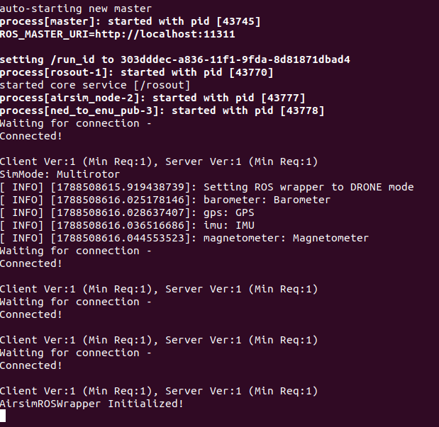
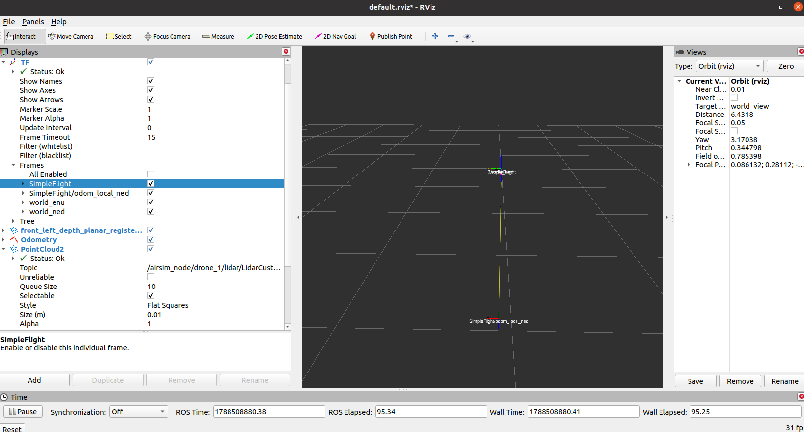
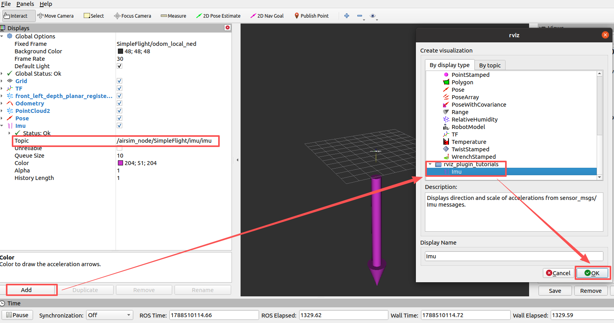

低空载具 ROS 封装器 airsim_ros_pkgs
该页面展示 AirSim C++ 客户端库上的 ROS 封装。
安装
以下步骤适用于 Linux。如果在 Windows 上运行 AirSim，则可以使用 Windows Subsystem for Linux（WSL）或者虚拟机来运行 ROS 封装，请参阅 下面 的说明。如果由于某些问题，您无法或不喜欢在主机 Linux 上安装 ROS 和相关工具，您也可以使用Docker尝试，请参阅 为 ROS 封装使用 Docker 中的步骤。
-
如果默认GCC版本不是8或更高版本（使用
GCC--version检查）- 使用 gcc >= 8.0.0:
sudo apt-get install gcc-8 g++-8 - 使用
gcc-8 --version验证安装
- 使用 gcc >= 8.0.0:
-
Ubuntu 16.04
- 安装 ROS kinetic
- 安装tf2 sensor 和 mavros 包：
sudo apt-get install ros-kinetic-tf2-sensor-msgs ros-kinetic-tf2-geometry-msgs ros-kinetic-mavros*
-
Ubuntu 18.04
- 安装 ROS melodic
- 安装 tf2 sensor 和 mavros 包:
sudo apt-get install ros-melodic-tf2-sensor-msgs ros-melodic-tf2-geometry-msgs ros-melodic-mavros*
-
Ubuntu 20.04（推荐）
- 安装 ROS noetic
- 安装 tf2 sensor 和 mavros 包:
sudo apt-get install ros-noetic-tf2-sensor-msgs ros-noetic-tf2-geometry-msgs ros-noetic-mavros*
-
安装 catkin_tools
sudo apt-get install python-catkin-tools或pip install catkin_tools。 如果在 Ubuntu 20.04 则使用pip install "git+https://github.com/catkin/catkin_tools.git#egg=catkin_tools"
构建
- 构建 AirSim
git clone https://github.com/OpenHUTB/air.git;
cd air;
./setup.sh;
./build.sh;
笔记： 虚拟机中执行build.sh报错：
Could not find compiler set in environment variable CC:
...
Make Error: CMAKE_C_COMPILER not set, after EnableLanguage
build.sh 报错：
/home/user/air/external/rpclib/rpclib-2.3.0/include/rpc/dispatcher.h:6:10: fatal error: 'atomic' file not found
./clean_rebuild.sh
- 确保已按照上面的安装页面中所述设置ROS的环境变量。为方便起见，将
source命令添加到.bashrc中（用特定的版本名替换mediatic）：
# Ubuntu 18.04 melodic
# echo "source /opt/ros/melodic/setup.bash" >> ~/.bashrc
# Ubuntu 20.04 noetic
echo "source /opt/ros/noetic/setup.bash" >> ~/.bashrc
source ~/.bashrc
- 构建 ROS 包
cd ros;
catkin_make
问题： catkin_make报错：Unable to find either executable 'empy' or Python module 'em'... try installing the package 'python3-empy'
原因：系统中安装了多个Python版本，确保 CMake 和 Catkin 工作空间使用的是正确的Python
解决：
conda activate nn_3.8
pip install catkin_tools
catkin_make -DPYTHON_EXECUTABLE=/home/user/miniconda3/envs/nn_3.8/bin/python
问题： Could not find a package configuration file provided by "tf2_sensor_msgs"
解决：
sudo apt-get install ros-noetic-tf2-sensor-msgs ros-noetic-tf2-geometry-msgs ros-noetic-mavros*
Failed to fetch http://packages.ros.org/ros/ubuntu/pool/main/r/ros-noetic-mavros-msgs
curl -s https://raw.githubusercontent.com/ros/rosdistro/master/ros.asc | sudo apt-key add -
sudo apt update
问题： ModuleNotFoundError: No module named 'em'
解决：
# 注意必须指定版本，否则会报错：AttributeError: module 'em' has no attribute 'RAW_OPT'
pip install empy==3.3.4
如果默认 GCC 不是8或更高（使用GCC--version检查），则编译将失败。在这种情况下，请显式使用gcc-8，如下所示
catkin build -DCMAKE_C_COMPILER=gcc-8 -DCMAKE_CXX_COMPILER=g++-8
运行
启动 ROS 节点
source devel/setup.bash;
# 使用 host 参数在不同机器上运行
# roslaunch airsim_ros_pkgs airsim_node.launch output:=screen host:=172.21.108.47
roslaunch airsim_ros_pkgs airsim_node.launch;

启动可视化工具 rviz
# 新建一个命令行终端
source devel/setup.bash;
roslaunch airsim_ros_pkgs rviz.launch;

显示主题为/airsim_node/SimpleFlight/imu/imu的 IMU 数据（通过rostopic list查看所有话题）：

注意： 如果在运行roslaunch airsim_ros_pkgs airsim_node.launch时出错，请运行catkin clean，然后重试
如果运行 rviz 报错：
(nn_3.8) user@ubuntu:~/air/ros$ roslaunch airsim_ros_pkgs rviz.launch
RLException: [rviz.launch] is neither a launch file in package [airsim_ros_pkgs] nor is [airsim_ros_pkgs] a launch file name
The traceback for the exception was written to the log file
解决：source devel/setup.bash;
使用 AirSim ROS 封装器
ROS 封装器由两个 ROS 节点组成：第一个是 AirSim 多旋翼 C++ 客户端库的封装器，第二个是简单的 比例-微分(PD) 位置控制器。 让我们看看这 2 个节点的ROS API：
AirSim ROS 封装器节点
发布者：
-
/airsim_node/origin_geo_pointairsim_ros_pkgs/GPSYaw 与全球 北东地坐标系 (NED) 坐标系对应的 GPS 坐标。此设置位于 airsim 的 settings.json 文件中，OriginGeopoint键的值即为该坐标。 -
/airsim_node/VEHICLE_NAME/global_gpssensor_msgs/NavSatFix 这是无人机在 Airsim 中的当前 GPS 坐标。 -
/airsim_node/VEHICLE_NAME/odom_local_nednav_msgs/Odometry 相对于起飞点的 NED 坐标系里程计（默认名称：odom_local_ned，发射名称和坐标系类型可配置）。 -
/airsim_node/VEHICLE_NAME/CAMERA_NAME/IMAGE_TYPE/camera_infosensor_msgs/CameraInfo -
/airsim_node/VEHICLE_NAME/CAMERA_NAME/IMAGE_TYPEsensor_msgs/Image RGB 图像或浮点型图像，具体取决于 settings.json 中请求的图像类型。 -
/airsim_node/VEHICLE_NAME/altimeter/SENSOR_NAMEairsim_ros_pkgs/Altimeter 这是当前高度表关于高度、气压和 QNH 的读数。 -
/airsim_node/VEHICLE_NAME/imu/SENSOR_NAMEsensor_msgs::Imu IMU 传感器数据 -
/airsim_node/VEHICLE_NAME/magnetometer/SENSOR_NAMEsensor_msgs::MagneticField 磁场矢量/罗盘测量 -
/airsim_node/VEHICLE_NAME/distance/SENSOR_NAMEsensor_msgs::Range 测量与主动式测距仪（如红外线或 IR 测距仪）之间的距离 -
/airsim_node/VEHICLE_NAME/lidar/SENSOR_NAMEsensor_msgs::PointCloud2 激光雷达点云
订阅者:
-
/airsim_node/vel_cmd_body_frameairsim_ros_pkgs/VelCmd 请忽略载具名称（vehicle_name）字段，将其留空。该字段将在未来用于多无人机场景。 -
/airsim_node/vel_cmd_world_frameairsim_ros_pkgs/VelCmd 请忽略vehicle_name字段，将其留空。该字段将在未来用于多无人机场景。 -
/gimbal_angle_euler_cmdairsim_ros_pkgs/GimbalAngleEulerCmd 以欧拉角表示的云台设定点。 -
/gimbal_angle_quat_cmdairsim_ros_pkgs/GimbalAngleQuatCmd 以四元数表示的云台设定点。 -
/airsim_node/VEHICLE_NAME/car_cmdairsim_ros_pkgs/CarControls 用于控制的油门、刹车、转向及档位选择。支持自动挡和手动挡控制模式，具体使用方法请参阅car_joy.py脚本。
服务:
-
/airsim_node/VEHICLE_NAME/landairsim_ros_pkgs/Takeoff -
/airsim_node/takeoffairsim_ros_pkgs/Takeoff -
/airsim_node/resetairsim_ros_pkgs/Reset 重置所有无人机
参数:
-
/airsim_node/world_frame_id[string]- 设置于：
$(airsim_ros_pkgs)/launch/airsim_node.launch - 默认值：world_ned
- 设置为 "world_enu" 可自动切换至 ENU 坐标系
- 设置于：
-
/airsim_node/odom_frame_id[string]- 设置于：
$(airsim_ros_pkgs)/launch/airsim_node.launch - 默认值：odom_local_ned
- 如果将 world_frame_id 设置为 "world_enu"，默认的 odom 名称将变为 "odom_local_enu"。
- 设置于：
-
/airsim_node/coordinate_system_enu[boolean]- 设置于
$(airsim_ros_pkgs)/launch/airsim_node.launch - 默认值：false
- 如果将 world_frame_id 设置为 "world_enu"，该设置将默认变为 true。
- 设置于
-
/airsim_node/update_airsim_control_every_n_sec[double]- 设置于：
$(airsim_ros_pkgs)/launch/airsim_node.launch - 默认值：0.01 秒。
- 这是用于从 AirSim 更新无人机里程计（odom）与状态以及发送控制指令的定时器回调频率。目前 RPClib 与 Unreal Engine 之间的接口上限为 50 Hz。由于 ROS 中的定时器回调会以尽可能高的频率运行，因此最好不要修改此参数。
- 设置于：
-
/airsim_node/update_airsim_img_response_every_n_sec[double]- 设置于：
$(airsim_ros_pkgs)/launch/airsim_node.launch - 默认值：0.01 秒。
- 这是 AirSim 中用于从所有摄像机接收图像的定时器回调频率。实际速率取决于请求的图像数量及其分辨率。由于 ROS 中的定时器回调会以尽可能高的速率运行，因此最好不要修改此参数。
- 设置于：
-
/airsim_node/publish_clock[double]- 设置于：
$(airsim_ros_pkgs)/launch/airsim_node.launch - 默认值：false
- 如果设置为 true，将发布 ROS 的
/clock话题。
- 设置于：
简单 PID 位置控制器节点
参数:
- PD 控制器参数：
-
/pd_position_node/kd_x[double],/pd_position_node/kp_y[double],/pd_position_node/kp_z[double],/pd_position_node/kp_yaw[double] 比例增益 -
/pd_position_node/kd_x[double],/pd_position_node/kd_y[double],/pd_position_node/kd_z[double],/pd_position_node/kd_yaw[double] 微分增益 -
/pd_position_node/reached_thresh_xyz[double] 从当前位置到设定点位置的欧几里得距离阈值（米） -
/pd_position_node/reached_yaw_degrees[double] 从当前位置到设定点位置的偏航距离阈值（度） -
/pd_position_node/update_control_every_n_sec[double] 默认值：0.01 秒
服务:
-
/airsim_node/VEHICLE_NAME/gps_goal[请求: srv/SetGPSPosition] 目标 GPS 位置 + 偏航角（绝对高度）。 -
/airsim_node/VEHICLE_NAME/local_position_goal[请求: srv/SetLocalPosition] 全局 NED 坐标系下的目标局部位置+偏航角。
订阅者:
-
/airsim_node/origin_geo_pointairsim_ros_pkgs/GPSYaw 监听由airsim_node发布的归位点（home）地理坐标。 -
/airsim_node/VEHICLE_NAME/odom_local_nednav_msgs/Odometry 监听由airsim_node发布的里程计数据
发布者:
/vel_cmd_world_frameairsim_ros_pkgs/VelCmd 向airsim_node发送速度指令
全局参数
-
动态约束。这些可以在 dynamic_constraints.launch 中进行修改：
-
/max_vel_horz_abs[double] 无人机最大水平速度（米/秒） -
/max_vel_vert_abs[double] 无人机最大垂直速度（米/秒） -
/max_yaw_rate_degree[double] 最大偏航率（度/秒）
-
杂项
使用 WSL1 或 WSL2 在 Windows10 上设置构架环境
这些安装说明描述了如何设置“Windows上Ubuntu上的Bash”（又名“Linux的Windows子系统”）。
它涉及在Windows10中启用内置的Windows Linux环境（WSL），安装兼容的Linux OS映像，最后安装构建环境，就像它是一个普通的Linux系统一样。
完成后，您将能够像在本机linux机器中一样构建和运行 ROS 封装器。
WSL1 vs WSL2
WSL2 是最新版本的 Windows 10 Linux 子系统。它比 WSL1 快很多倍（如果您使用 /home/... 下的原生文件系统，而不是 /mnt/... 下的 Windows 挂载文件夹），因此就速度而言，它是构建代码的首选。
安装完成后，您可以根据自己的喜好在 WSL1 或 WSL2 版本之间切换。
WSL 设置步骤
-
请按照 此处 的说明操作。请确认您要使用的 ROS 版本与您要安装的 Ubuntu 版本兼容。
-
恭喜，您现在已在 Windows 下拥有一个可运行的 Ubuntu 子系统，您可以前往 Ubuntu 16 / 18 说明 ，然后了解 如何在 Windows 上运行 Airsim 以及在 WSL 上运行 ROS 封装程序 ！
注意： 您可以通过在 Windows 上安装 VcXsrv 来运行 XWindows 应用程序（包括 SITL）。要使用它，请从 Windows 开始菜单找到并运行 XLaunch。在第一个弹出窗口中选择多窗口(Multiple Windows)，在第二个弹出窗口中选择启动时不启用客户端(Start no client)，在第三个弹出窗口中选择仅启动剪贴板。不要选择原生 OpenGL（如果无法连接，请选择禁用访问控制(Disable access control)）。您需要设置 DISPLAY 变量以指向您的显示器：在 WSL 中，它是 127.0.0.1:0；在 WSL2 中，它是计算机网络端口的 IP 地址，可以使用以下代码进行设置。此外，在 WSL2 中，您可能需要禁用公共网络的防火墙，或者创建一个例外，以便 VcXsrv 可以与 WSL2 通信。
export DISPLAY=$(cat /etc/resolv.conf | grep nameserver | awk '{print $2}'):0
- 诀窍：
- 如果你将这行添加到你的 ~/.bashrc 文件中，你就不需要再次运行这个命令了。
- 对于代码编辑，您可以在 WSL 中安装 VSCode。
- Windows 10 内置了“Windows Defender”病毒扫描程序。它会显著降低 WSL 的运行速度。禁用它可以大幅提升磁盘性能，但会增加病毒感染的风险，因此请自行承担风险。以下是众多资源/视频之一，向您展示如何禁用它：如何在 Windows 10 上禁用或启用 Windows Defender
WSL 和 Windows 10 之间的文件系统访问
在 WSL 中，Windows 驱动器位于 /mnt 目录中。例如，要列出您的 (<用户名>) 文档文件夹中的文档：
`ls /mnt/c/'Documents and Settings'/<username>/Documents`
or
`ls /mnt/c/Users/<username>/Documents`
在 Windows 系统中，WSL 发行版的文件位于（在 Windows 资源管理器地址栏中输入）：
\\wsl$\<distribution name>
例如
\\wsl$\Ubuntu-18.04
如何在 Windows 上运行 Airsim 以及在 WSL 上运行 ROS 封装程序
对于 WSL 1，请执行以下操作：
export WSL_HOST_IP=127.0.0.1
对于 WSL 2：
export WSL_HOST_IP=$(cat /etc/resolv.conf | grep nameserver | awk '{print $2}')
现在，就像 在 Linux 运行部分一样 ，执行以下命令：
source devel/setup.bash
roslaunch airsim_ros_pkgs airsim_node.launch output:=screen host:=$WSL_HOST_IP
roslaunch airsim_ros_pkgs rviz.launch
使用 Docker 运行 ROS
tools 目录中包含一个 Dockerfile 文件。要构建 airsim-ros 镜像，请执行以下操作：
cd tools
docker build -t airsim-ros -f Dockerfile-ROS .
要运行程序，请替换以下 AirSim 文件夹的路径：
docker run --rm -it --net=host -v <your-AirSim-folder-path>:/home/testuser/AirSim airsim-ros:latest bash
上述命令会将 AirSim 目录挂载到容器内的主目录中。您在主机上对源文件所做的任何更改都会在容器内生效，这对于开发和测试非常有用。现在，请按照 构建 步骤编译并运行 ROS 封装程序。